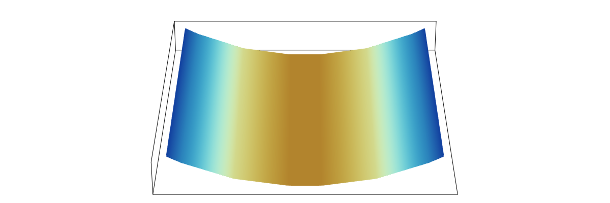

Membrane ALE FEM
MembraneAleFem.jl solves the continuum equations governing the dynamics of a lipid membrane, using an arbitrary Lagrangian–Eulerian (ALE) finite element method (FEM). In doing so, the surface is discretized and endowed with a mesh whose material behavior and dynamics are arbitrarily specified by the user. The fundamental unknowns are then the material velocity $\boldsymbol{v}$, mesh velocity $\boldsymbol{v}^{\text{m}}$, and surface tension $\lambda$—the latter of which is a Lagrange multiplier that enforces areal incompressibility. Since the mesh motion is arbitrarily specified, we employ another Lagrange multiplier—referred to as the mesh pressure $p^{\text{m}}$—to enforce the ALE kinematic constraint
\[\big( \boldsymbol{v} \, - \, \boldsymbol{v}^{\text{m}} \big) \boldsymbol{\cdot} \boldsymbol{n} \, = \, 0 ~,\]
where $\boldsymbol{n}$ is the unit normal to the surface. Finally, the position $\boldsymbol{x}$ of the membrane surface is parametrized by the two coordinates $\zeta^\alpha$, and determined at the time $t$ from the mesh velocity according to
\[\boldsymbol{x} (\zeta^\alpha, t) \, = \, \boldsymbol{x} (\zeta^\alpha, 0) \, + \, \int_0^t \boldsymbol{v}^{\text{m}} (\zeta^\alpha, t') ~ \text{d} t' ~.\]
Note that here and from now on, $\alpha$ and other Greek indices span the set {1, 2}. For those also referring to the associated manuscript, in this documentation we drop the 'check' accent over Greek indices for notational convenience.
In employing finite element analysis, we discretize both the temporal and parametric domains. At the time $t_n$ of the $n^{\text{th}}$ time step, we solve for the finitely many degrees of freedom corresponding to the discretized mesh. Details of our numerical implementation are provided in the manual.
Citation
If you use MembraneAleFem.jl in your work, please reference the following article
@article{sahu-arxiv-2024,
author = {A. Sahu},
title = {{Arbitrary Lagrangian--Eulerian finite element method for lipid membranes}},
journal = {arXiv preprint},
year = {2024},
eprint = {2412.07596},
url = {https://arxiv.org/abs/2412.07596},
archivePrefix={arXiv},
}Installation
Open the Julia REPL, for which you should see the prompt julia>. Then type the following:
using Pkg; Pkg.add(MembraneAleFem)
using MembraneAleFemUsage
To solve a particular Scenario, one chooses appropriate Parameters and also specifies scenario-specific keyword arguments. The requisite arguments are listed in check_params. In what follows, examples of (1) pure bending and (2) tether pulling are provided. In all cases:
- open the Julia REPL
- at the prompt
julia>, enter
using MembraneAleFemPlotting
There are many ways to plot the calculated results. In the examples presented below, we assume the following has been entered in the REPL:
using DelimitedFiles, GLMakie, LaTeXStrings
GLMakie.activate!();
set_theme!(theme_latexfonts());1. Pure bending
- Calculations
p = Params(motion=LAG, scenario=F_BEND, num1el=2, num2el=2, length=1.);
mesh, xms, cps = solve(p; bend_tm=2.0, bend_mf=0.5,
t0=0, t0_id=0, Δts=[0.5 for i=1:16],
out_path=".", out_file="out.txt");- Plotting
Data files are saved, and can be used to generate a video. Here, we present one way to visualize the final frame from the REPL. The surface color is the error in the surface tension, multiplied by 100.
xout, uout = generate_output(mesh, xms, cps);
fig = Figure(size=(800, 600));
ga = fig[1,1] = GridLayout();
ax = Axis3(ga[1,1], aspect = :data, perspectiveness = 0.2,
elevation = 0.5, azimuth = π/2, protrusions = -0);
surf = surface!(ax, xout[:,:,1], xout[:,:,2], xout[:,:,3],
color = uout[:,:,mesh.dofs[Dof.λ]] .* 10^2 .- 0.25*10^2,
colorrange = (-2.0, 2.0), colormap = :roma, shading = NoShading);
hidedecorations!(ax);
fig
2. Tether pulling
- Calculations
p = Params(motion=LAG, scenario=F_PULL, num1el=19, num2el=19, length=16.);
mesh, xms, cps = solve(p; pull_speed=0.5,
t0=0, t0_id=0, Δts=[0.5 for i=1:32],
out_path=".", out_file="out.txt");- Pull force
f_pull_data = readdlm("f-pull.txt");
tether_z = f_pull_data[2:end,4];
tether_f = f_pull_data[2:end,7];
scatter(tether_z, tether_f, markersize=15, color=RGBf(0.75, 0.34, 0.0),
figure=(;fontsize=32, size=(800, 650)),
axis=(; limits = (0, 8, 0, 6.8), aspect=1.2, title="Pull Force",
xlabel=L"z_{\text{p}}/r_{\text{c}}",
ylabel=L"\mathcal{F}/(k_{\text{b}}/r_{\text{c}})"))- Restart example
To continue tether pulling from its last saved state, run the following code.
mesh, xms, cps = restart("params.dat", "args.dat";
in_path=".", t0=16.0, t0_id=32, Δts=[0.5 for i=1:12]);3. Additional examples
For the following Scenarios, we provide only the code to run the calculations; solutions can be plotted by modifying the code above.
- Couette flow
p = Params(motion=STATIC, scenario=F_COUE, length=1.0);
mesh, xms, cps = solve(p; t0=0, t0_id=0, Δts=[1.0], out_path=".", out_file="out.txt");- Poiseuille flow
p = Params(motion=STATIC, scenario=F_POIS, length=1.0);
mesh, xms, cps = solve(p; t0=0, t0_id=0, Δts=[1.0], out_path=".", out_file="out.txt");- Lid-driven cavity flow
p = Params(motion=STATIC, scenario=F_CAVI, length=1.0);
mesh, xms, cps = solve(p; t0=0, t0_id=0, Δts=[1.0], out_path=".", out_file="out.txt");Manual Outline
References
- Dohrmann, C. R. and Bochev, P. B. (2004). A stabilized finite element method for the Stokes problem based on polynomial pressure projections. Int. J. Numer. Methods Fluids 46, 183–201.
- Lyness, J. N. (1968). Differentiation formulas for analytic functions. Math. Comp. 22, 352–362.
- Lyness, J. N. and Moler, C. B. (1967). Numerical differentiation of analytic functions. SIAM J. Numer. Anal. 4, 202–210.
- Piegl, L. and Tiller, W. (1997). The NURBS Book. 2nd Edition, Monographs in Visual Communication (Springer-Verlag, Berlin).
- Sahu, A. (2024). Arbitrary Lagrangian–Eulerian finite element method for lipid membranes, arXiv preprint, arXiv:2412.07596.